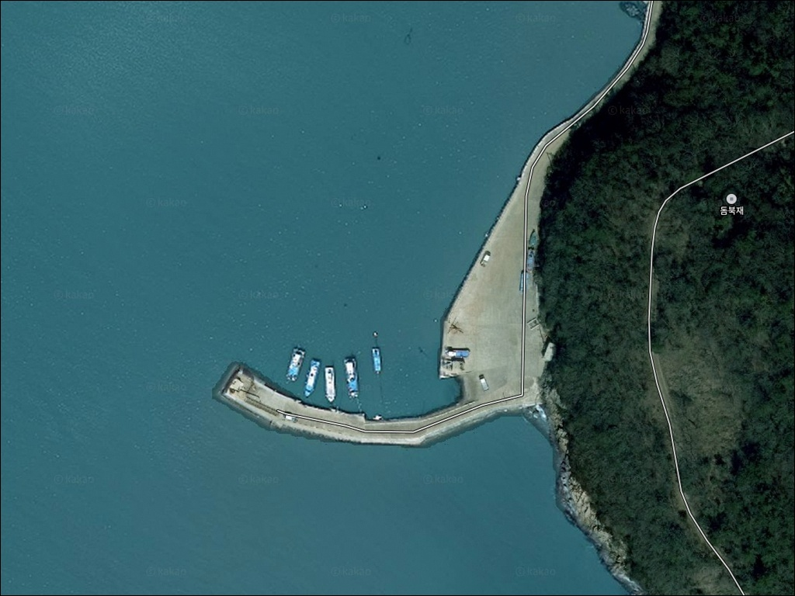
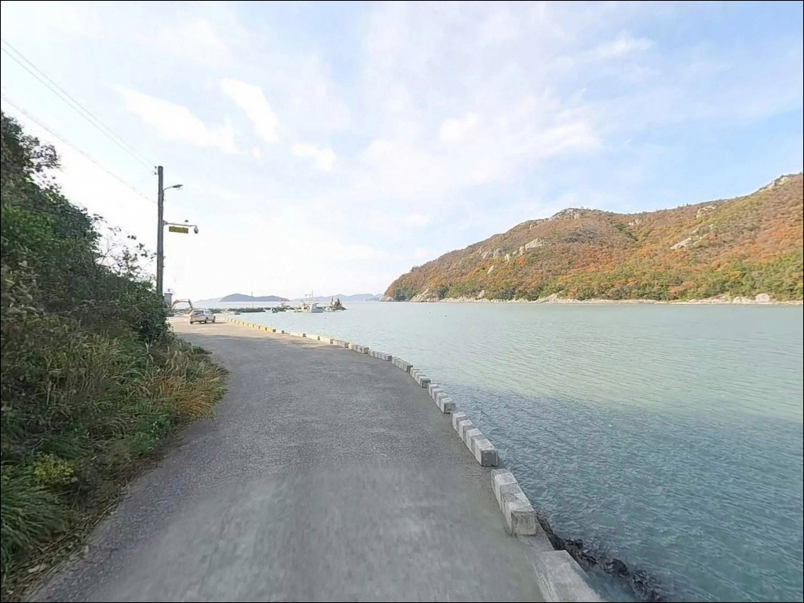
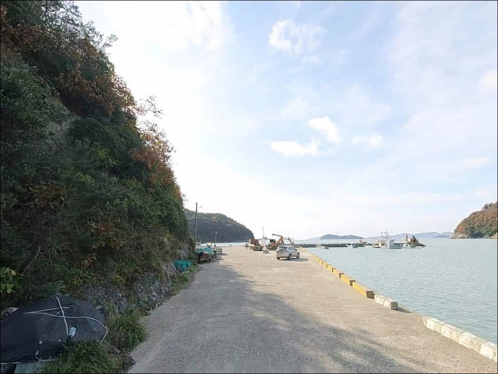
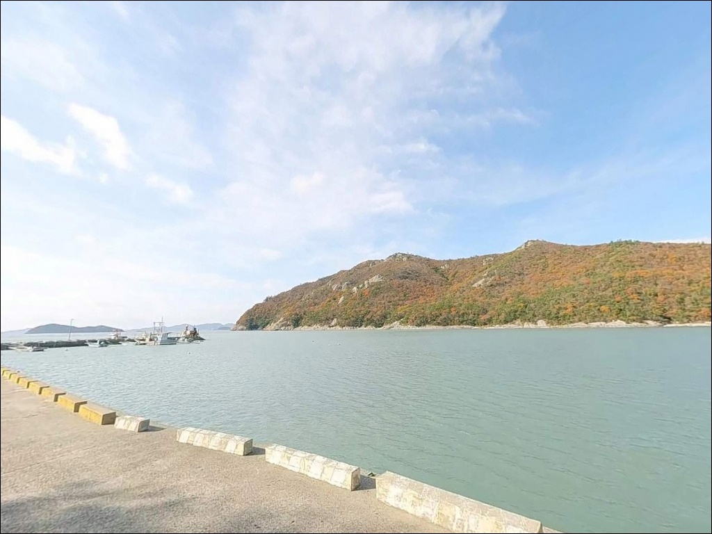
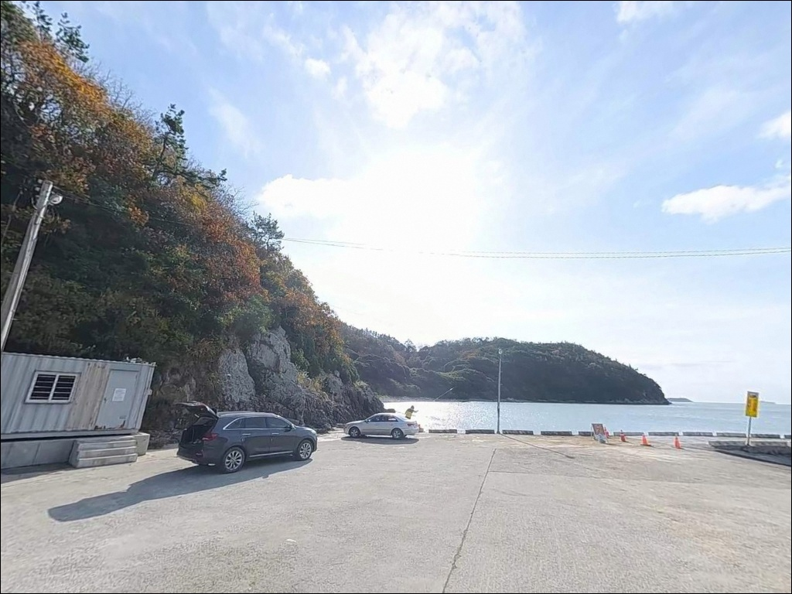
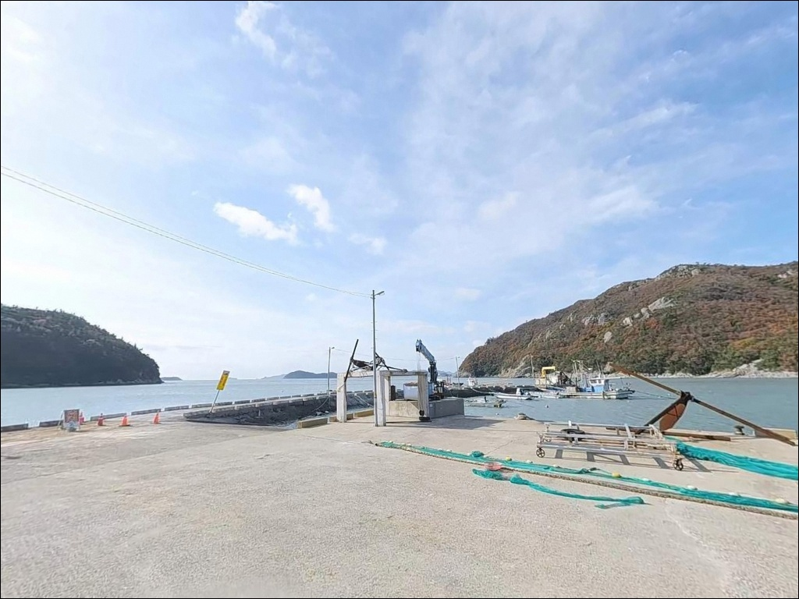
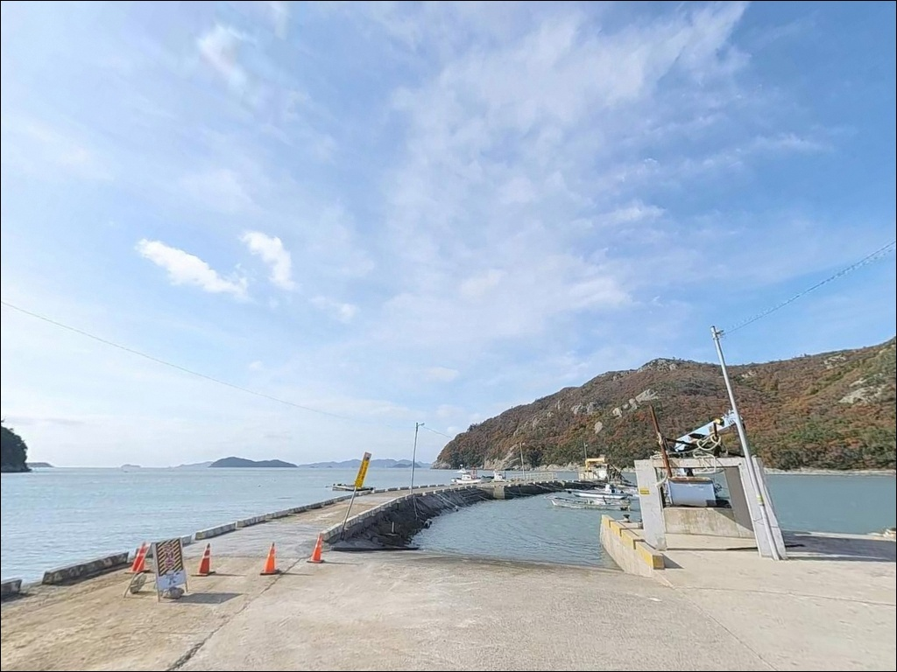
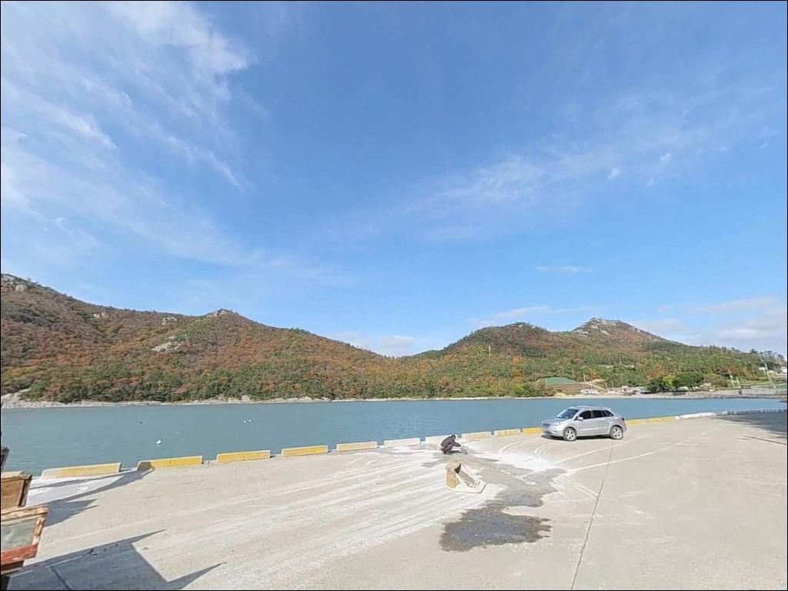
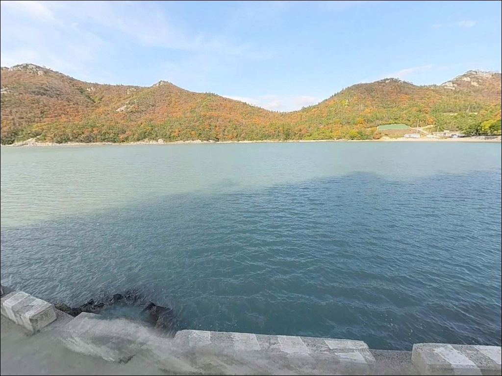

굴포리 선착장, 진도 전남 진도군 자연 그대로의 분위기에서 차박, 낚시를 즐기기 좋은 포인트


포인트 안내
굴포리 선착장 (굴포항)
전남 진도군 임회면 굴포리 728-8
수심 0~1.7m 수준의 만입형 지방어항에서
물때 확인 없이 간조 직전에 도착하면
암반이 드러나 낚시 가능 구간 자체를 잃게 됩니다.
만조 전후 타이밍을 맞추지 않으면
어떤 채비를 써도 의미가 없는 포인트 구조입니다.
1978년 지방어항으로 지정된 굴포항은
연대산(148.8m)과 소산(154m) 산릉 사이
만입된 곳에 자리해
외해 파도 영향이 비교적 적은 대신,
수위 변화가 뚜렷하게 나타나는
전형적인 내만형 지형 구조입니다.
이 글은 굴포리 선착장의
진입 동선, 낚시 여건, 물때 판단 기준,
낚시 스타일별 공략 조건에 집중합니다.
조황 단정이나 특정 어종 보장은
이 글의 범위에 포함되지 않습니다.

1. 포인트 위치 및 진입 동선 분석
굴포리 선착장은 진도 본섬 남동부 해안,
임회면 굴포리에 위치한 소규모 지방어항입니다.
연대산과 소산 산릉 사이 만입부에 자리해
양쪽 산릉이 외해 방향을 차단하는 지형 구조입니다.
진입은 읍·면 간선도로에서 갈라지는
마을 도로를 따라 이루어집니다.
포장된 농어촌 도로이지만 폭이 좁은 구간이 있어
소형~중형 차량 기준으로는 무난하며,
캠핑카나 대형 SUV는
출발 전 위성지도로 진입로를 사전 확인하는 편이 안전합니다.
주차는 선착장 진입부 공터 또는
선착장 앞 공간을 활용하는 방식이 일반적입니다.
실제 어선이 출입하는 지방어항이므로
어선 진출입로와 작업 공간을 가리지 않는 자리를
먼저 확인하는 것이 기본입니다.

2. 차박 환경 평가 및 야간 체류 여건
굴포항은 진도 차박·낚시 관련 자료에서
대표 차박 포인트 목록에 올라오지 않는 곳입니다.
마을 어항 특성상 민가와 항구가 가까이 붙어 있고
항로 안내등과 마을 가로등이 혼합된 환경이어서
완전한 노지 분위기는 아닌 조건입니다.
야간에는 어선 출입이 있을 수 있고
마을 주민 활동 영향도 남아 있는 편입니다.
낚시를 마치고 차 안에서 짧게 눈을 붙이는 용도로는
활용이 가능하지만,
어닝이나 텐트를 펼치는 본격 차박 형태는
공간과 프라이버시 여건이 넉넉하지 않습니다.
만입부 구조 덕분에 파도·바람 영향은 비교적 적은 편이라
체류 자체는 안정적인 편입니다.
하룻밤 텐트를 치는 형태보다
새벽 물때에 맞춰 일찍 도착해 낚시하고 떠나는
당일 출조 형태가 이 포인트 성격과 더 잘 맞습니다.


3. 주변 편의시설 및 인프라 현황
굴포리 마을 반경 3km 이내,
귀성삼거리 일대에 편의점과 식당이 있어
기본 보급이 가능한 구조입니다.
굴포항에서 차량으로 이동해야 하는 거리여서
출조 전 보급을 마치고 진입하는 것이 효율적입니다.
24시간 편의점이 필요하다면
팽목항(진도항) 방면으로 10km 이내에
편의점이 위치해 있습니다.
연료도 임회면 방면으로 이동하면
주유소 이용이 가능합니다.
응급 상황 대비를 위한 의료시설은
진도읍까지 15~20km 수준이므로
비상약품은 출발 전 챙겨야 합니다.
화장실·샤워장 등 시설 정보는
확정 출처가 없어 이 글에서는 다루지 않습니다.
현장 도착 후 확인하거나
진도군 임회면 사무소에 사전 문의하는 것이 정확합니다.

4. 물때 모르고 가면 헛걸음이 되는 이유
굴포항 방문 전 가장 먼저 확인할 것은
물때입니다.
수심 0~1.7m의 만입형 지형은
간조 시 암반이 드러나며
낚시 가능 구간이 방파제 끝단 방향으로
크게 제한되는 구조입니다.
바다타임에서 굴포항 기준 물때를 확인하고
만조 전후 타이밍에 맞춰 출발 시각을 잡는 것이
이 포인트를 제대로 활용하는 첫 번째 조건입니다.
암반 저질 지형이므로 채비 손실이 생기는 편입니다.
여분 채비를 넉넉하게 준비하고,
바닥 걸림이 심한 구간은
채비를 가볍게 조정해 손실을 줄이는 방식이 유효합니다.
기상 변화도 사전에 확인해야 합니다.
진도 해역은 바람·파고 변화가 큰 지역이어서
강풍 예보 시 출조를 취소하는 판단이 안전합니다.
실제 어선이 운용되는 지방어항입니다.
어선 입출항 시 낚시를 일시 중단하고 자리를 비켜야 하며,
야간에는 헤드랜턴과 구명조끼를 반드시 착용해야 합니다.
쓰레기 전량 수거 후 철수하는 것은
소규모 어항에서 지역민 민감도가 높은 부분입니다.

5. 지형 기반 낚시 여건 분석
굴포항의 지형적 핵심은
연대산과 소산 산릉에 둘러싸인 만입 구조입니다.
외해 직접 노출이 적어 파도 영향이 약한 대신,
조류 흐름도 내만형 수준으로 완만한 편입니다.
진도 남동부 전반 조류는 1.1~2.4노트 수준이며,
남쪽 외해로 갈수록 조류가 강해지는 지형 패턴을 보입니다.
수심은 0~1.7m로 얕고 저질은 암반입니다.
만조·간조 차에 따라 낚시 가능 구간이
뚜렷하게 달라지는 구조입니다.
방파제 끝단 외항 쪽에서 수심이 확보되는 편이며,
테트라포드 인근과 암반 경계부가
어종이 붙기 좋은 지점입니다.
암반 여밭 구조는 감성돔·붕장어 등
바닥성 어종이 서식하기 좋은 조건입니다.
임회면 굴포 일대는 가을~초겨울 시즌에
감성돔이 들어오는 구간으로 알려진 해역이기도 합니다.
최신 조황은 출조 전에 꼭 검색해 보시기 바랍니다.
굴포항은 만조 전후 2~3시간이
낚시 자리가 살아 있는 시간대입니다.


6. 굴포항 지형에 어울리는 낚시 스타일
원투낚시는 이 포인트에서 가장 기본이 되는 방식입니다.
암반 저질 지형에서는 채비를 외항 방면으로 멀리 투척한 뒤
암반 경계부와 모래가 섞이는 지점을 노리는 방식이
바닥성 어종 공략에 유효합니다.
정조 전후 조류가 멈추는 타이밍에
채비를 고정해 기다리는 방식이 이 포인트와 잘 맞습니다.
감성돔 찌낚시도 시도해 볼 만한 스타일입니다.
방파제 끝단 외항 쪽 테트라포드 인근에서
흘림찌 방식으로 암반 경계부를 탐색하는 패턴이
가을~초겨울 감성돔 시즌과 겹칩니다.
만조 흐름이 살아 있는 시간대에
집중하는 것이 굴포항 찌낚시의 기본입니다.
가을철에는 쭈꾸미 에깅도 선택지입니다.
선착장·방파제 주변을 도보로 이동하며
에기·텐야 계열 채비로 쭈꾸미를 탐색하는 방식이
이 구조에 어울리는 형태입니다.
가을 시즌 출조라면 에깅 채비를 함께 준비해 두면
현장 대응 폭이 넓어집니다.
루어낚시는 암반 여밭 지형을 활용할 수 있습니다.
우럭·노래미를 대상으로
가벼운 지그헤드 채비로 테트라포드 주변을
천천히 탐색하는 방식이 이 지형 구조와 맞고,
방파제 끝단 외항 쪽에서는
농어를 미노우 루어로 노려볼 수 있는 구간입니다.
진도 남동부 방파제는 가을~초겨울
감성돔 찌낚시 시즌과 쭈꾸미 에깅 시즌이
겹치는 구간입니다.

7. 대안 포인트 및 플랜 B 동선
굴포항 물때가 맞지 않거나
수심이 여의치 않을 때 가장 가까운 대안은
귀성항 갯바위입니다.
굴포항 기준 약 1.9km 거리여서
이동 부담이 크지 않으며,
굴포 일대를 묶어 짧은 거리 내에서
포인트 로테이션이 가능합니다.
더 넓은 수심과 안정적인 조류 환경을 원한다면
남동마을 방파제가 다음 선택지입니다.
굴포항보다 외해에 가까운 구조여서
바람·너울 상황이 안정적인 날에 방문하기 좋고,
감성돔 방파제 낚시를 주력으로 하는
낚시인에게 지형 조건이 더 폭넓게 맞는 편입니다.
편의시설과 주차 공간이 필요한 플랜B라면
서망항 북측 방파제 또는 팽목항을
기점으로 잡는 것이 임회면 권역에서 가장 효율적입니다.
두 곳 모두 굴포항에서 차량으로 5~10km 이내 거리이며,
낚시와 차박을 동시에 운용하기에
굴포항보다 여건이 안정적인 편입니다.

물때를 알고 가면
굴포항은 조용한 포인트가 됩니다
원투낚시나 감성돔 찌낚시를 즐기는 낚시인이라면
굴포항의 암반 여밭 구조와 내만 지형 조건이
나쁘지 않게 맞아 떨어집니다.
가을 쭈꾸미 에깅을 겸한 당일 출조 계획이라면
임회면 권역에서 굴포항이 한 축이 될 수 있는 포인트입니다.
다만 수심이 얕고 간조 시 낚시 가능 구간이
크게 줄어드는 구조여서
물때 확인 없이 찾아가는 것은
헛걸음으로 이어지기 쉽습니다.
바다타임 물때 확인, 채비 여분 준비,
진입로 사전 점검,
이 세 가지를 갖추고 가는 것이
굴포항을 제대로 활용하는 방법입니다.
차박을 메인으로 계획한다면
굴포항보다 서망항이나 팽목항을 베이스로 잡고
굴포항은 낚시 포인트 중 하나로
짧게 들르는 동선이 더 안정적입니다.
물때를 맞춰 만조 흐름 속에서
느긋하게 낚싯대를 드리울 수 있는
조용한 내만형 포인트입니다.